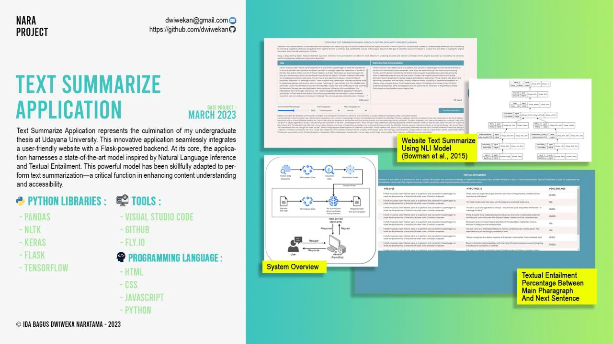

Undergraduate thesis, Udayana University
Text Summarization with Textual Entailment
My undergraduate thesis, an extractive summarizer driven by a natural-language-inference model and served as a Flask web app.
- Role
- Sole developer
- When
- Mar 2023
- Where
- Undergraduate thesis, Udayana University
Overview
My undergraduate thesis at Udayana University, an extractive text summarizer built on natural language inference. A textual-entailment model trained on SNLI (after Bowman et al., 2015, with 76% test accuracy) scores sentence pairs, and the highest-ranked sentences are assembled into a coherent summary. It was tested at summarization ratios of 30–60%.
The model is served through a Flask back end with an HTML, CSS and JavaScript front end, deployed on Fly.io.
